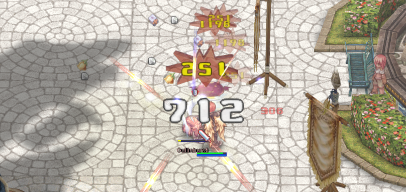
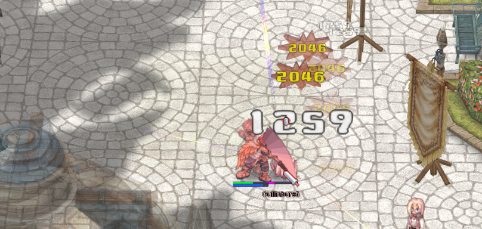
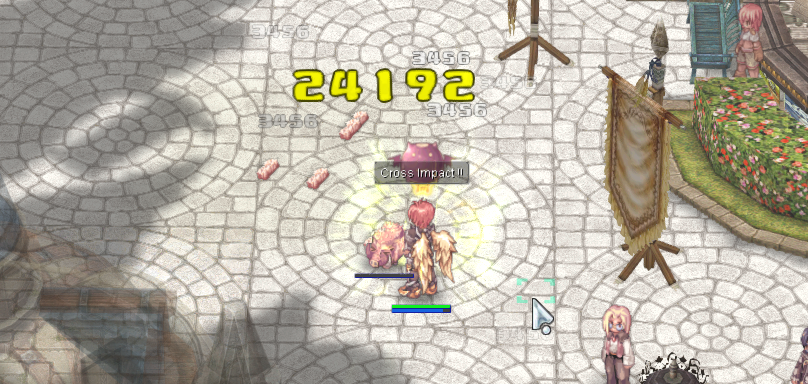
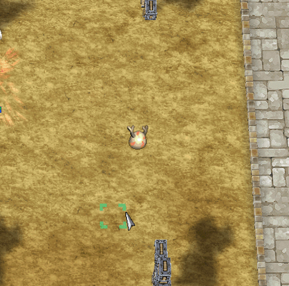
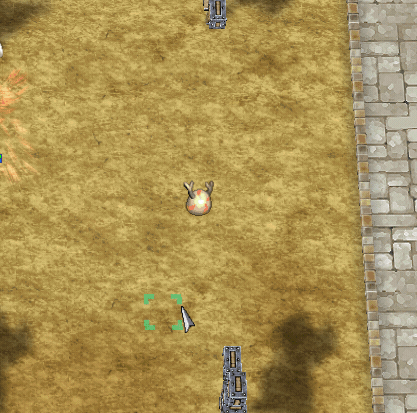

Ragnarok 仙境传说 | RO 攻击伤害字体效果
| 名称 | 描述 | 预览 | 下载 | 来源 |
|---|---|---|---|---|
| Savior Damage | Savior Damage Font 原版字体 |    | Download | hercules： https://board.herc.ws/files/file/262-savior-damage-font/ |
| Savior Damage 改 | 由 Savior Damage Font 修改而来的伤害字体 |
 

|
Download | ROLab： https://rolab.org/thread-2167-1-1.html |